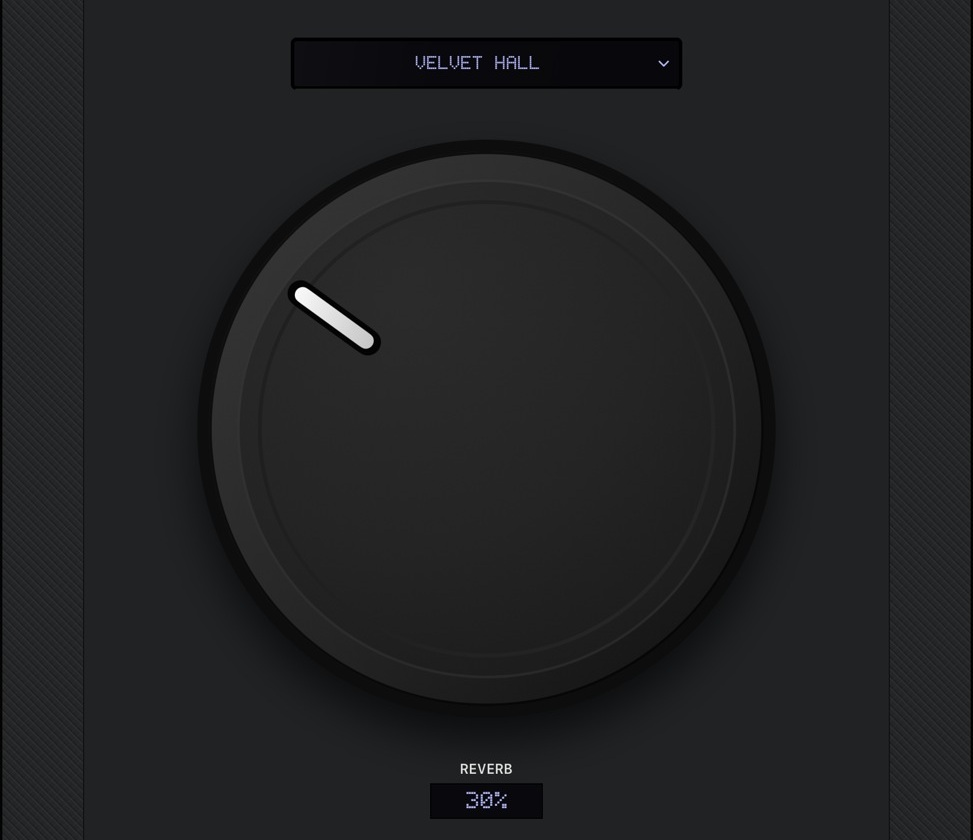
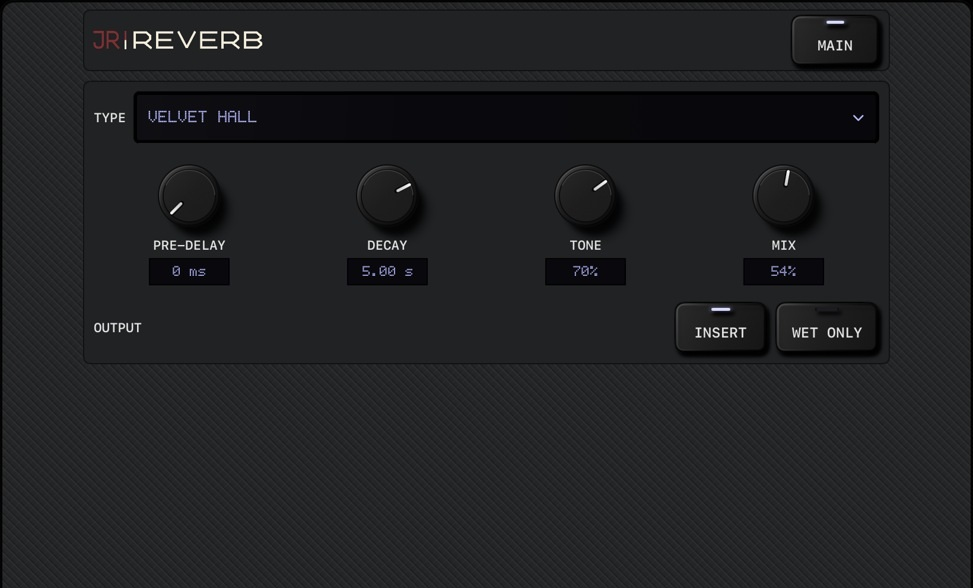

Rooms & chambers
Air Room · Amber Chamber
Bring dry drums into a small space or add depth without a long wash.
VINTAGE REVERB / iPHONE · iPAD · AUv3
Start with a tight room or let a hall bloom behind the beat. JR REVERB puts 27 reverb modes under one main dial, with four controls when you want to shape the tail.
APP STORE LAUNCH IN PREPARATION

SOUND DEMO
The reverb tail carries the keys beyond the end of the phrase. Both clips use the same keys phrase and input level.
EFFECT TYPES
A short room can bring drums together. A longer tail gives a chord somewhere to go.
Air Room · Amber Chamber
Bring dry drums into a small space or add depth without a long wash.
Velvet Hall · Mercury Plate
Let chords bloom in a hall, or give a snare the denser tail of a plate.
Gated Room · Orbit Hall
Use a tail that cuts off decisively, or let the space move behind the notes.
EDIT / FOUR CONTROLS

Tap or hold the active type name to browse groups, or drag it to step through types. Each type recalls its edit settings, and MIX keeps its current value as you change types.
STANDALONE / AUv3
Open the app and audition the effect on DRUMS or KEYS. Start with the main dial, then open EDIT to refine it.
Find Jazzy Rhythmer: JR REVERB under audio effects in an AUv3 host. In EDIT, choose Wet Only for a send or use Insert to keep the dry source alongside the reverb.